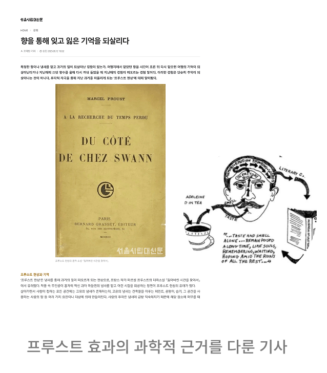
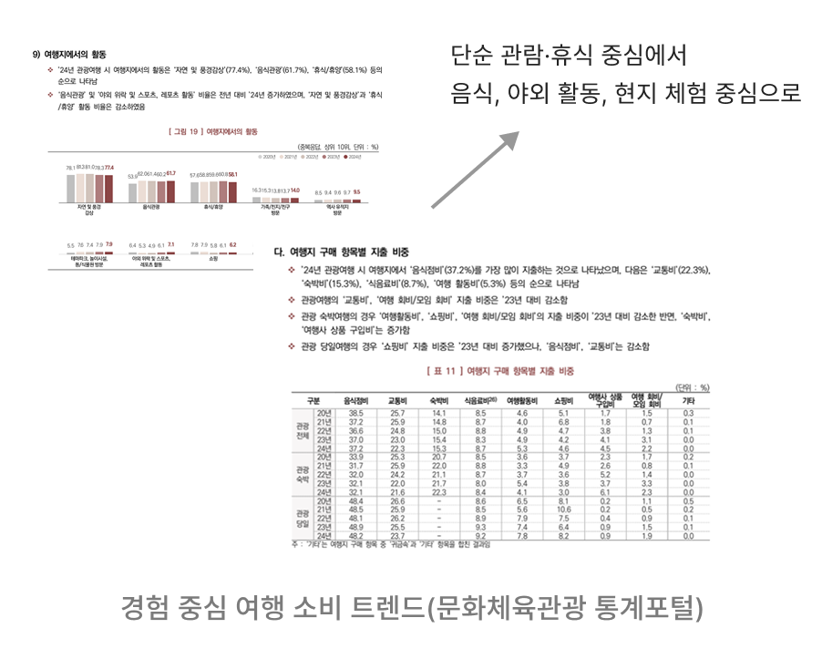
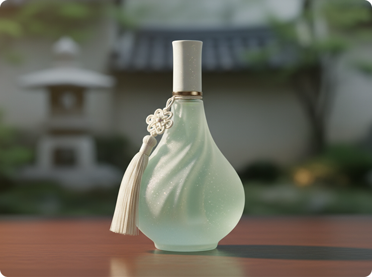
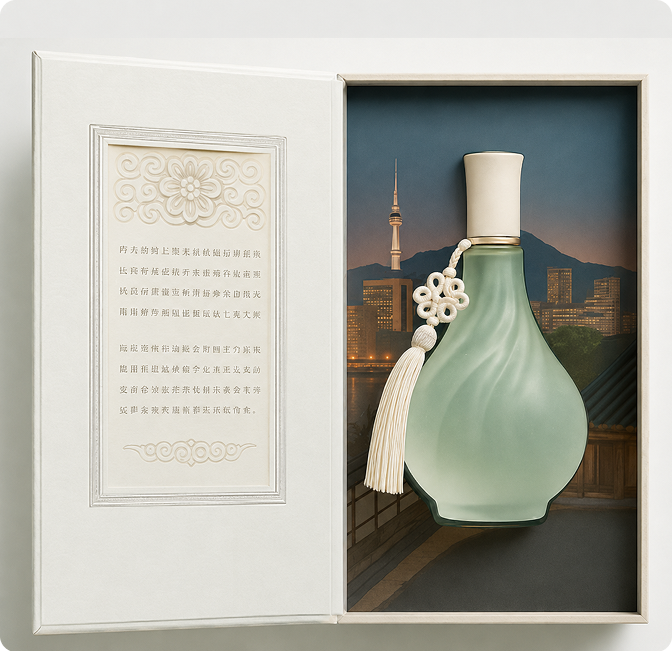

개인 프로젝트
한국 지역별 감성을 담은 향수
여행 후 감정을 지속적으로 유지하기 어렵고,
기존 기념품은 단순 소비로 끝나 여행 경험이 일상에서 다시 연결되는 구조가 부족
여행의 순간을 향으로 저장하고, 일상에서 다시 꺼내 경험할 수 있는 지역 기반 향수 브랜드를 설계


경험은 시간이 지나면 사라지지만, 향을 통해 다시 불러올 수 있다.
→ 콘텐츠는 그 경험을 반복시키는 도구
Experience
경험 중심 여행 증가
Memory
여행 기억은 시간이 지나며 희미해짐
Opportunity
경험을 지속시키는 새로운 기념품 필요
단순한 기념품을 넘어, 여행의 감정과 지역의 가치를 지속시키는 브랜드 경험을 기대했습니다.

AI 기반 제품 컨셉 시각화 이미지
프루스트 효과에서 아이디어를 착안해 개인 프로젝트로 진행했습니다. 향이 특정 기억과 이미지로 이끈다는 점에서 여행지의 추억을 담고 싶다는 방향성으로 시작했습니다. 브랜드명은 한국의 ‘한’과 한국적 정서를 담은 ‘한’을 함께 담아 설정했습니다. 향수병은 노리개 장식과 한복 치마의 결을 살린 호리병 형태 로 디자인하고, 지역별 분위기에 맞춰 색상과 향을 다르게 구성했습니다. 기획부터 브랜딩, 디자인 방향까지 혼자 진행하며 하나의 브랜드가 완성되는 전체 흐름을 경험할 수 있었습니다.
디자인 면에서 아쉬움이 남아, 다시 한다면 레퍼런스를 더 폭넓게 참고하고 싶습니다. 당시엔 AI 활용도가 지금보다 낮고 성능도 아쉬운 시기라, 원하는 디자인을 직접 구현 하거나 AI로 보완하는 데도 한계가 있었습니다. 기획서 구성도 다시 다듬고 싶은 부분입니다. 넣고 싶은 내용이 많다 보니 욕심을 부려 정보량이 과해졌고, 그만큼 가독성이 떨어졌습니다. 다시 한다면 핵심만 남기고 불필요한 내용은 정리해 가독성을 높이고 싶습니다. 또한 혼자 진행하다 보니 놓쳤던 부분들이 있었을 텐데, 주변 사람들에게 기획 안을 보여주고 다양한 피드백을 적극적으로 수집해 완성도를 높이고 싶습니다.
기획부터 브랜딩, 디자인까지 전 과정을 혼자 처음부터 끝까지 진행하면서, 하나의 프로젝트를 완결하기까지 필요한 모든 단계를 직접 몸으로 익힐 수 있었습니다. 아이디어 구상 단계에서의 막막함, 컨셉을 구체적인 결과물로 풀어내는 과정, 완성도를 높이기 위해 스스로 점검하고 수정하는 과정까지 온전히 경험하면서, 협업 없이도 기획을 끝까지 밀고 나갈 수 있는 실행력과 책임감을 기를 수 있었던 시간이었습니다